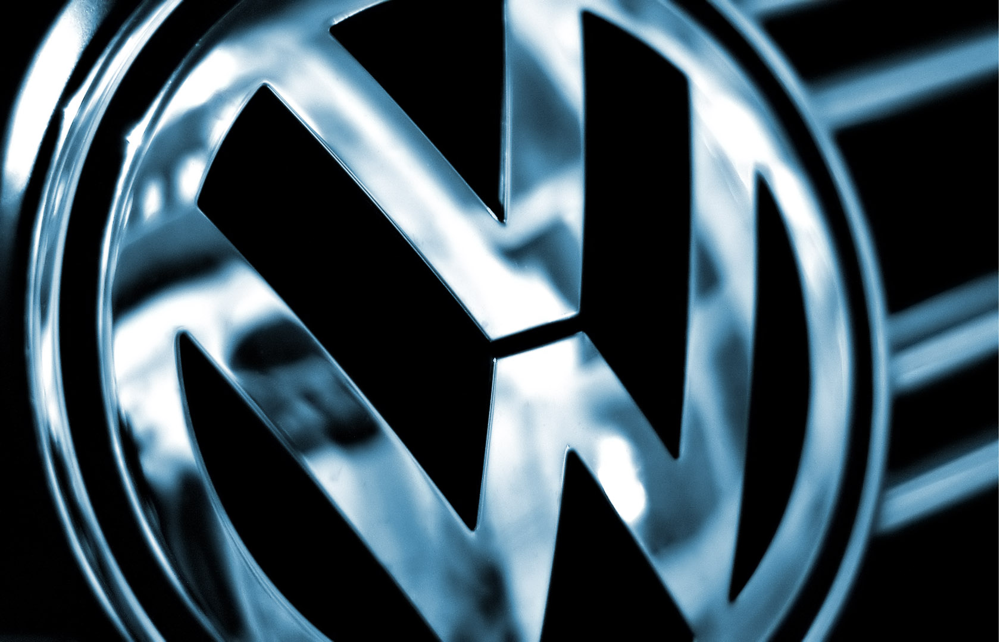

Rolls-Royce Limited is a renowned English car-manufacturing company and later, aero-engine manufacturing company founded by Charles Stewart Rolls and Sir Frederick Henry Royce on 15 March 1906 as the result of a partnership formed in 1904.

The original Rolls-Royce Limited had been nationalised in 1971 due to the financial collapse of the company, caused in part by the development of the RB211 jet engine. In 1973, the British government sold the Rolls-Royce car business to allow nationalised parent Rolls-Royce (1971) Limited to concentrate on jet engine manufacture. In 1980, Rolls-Royce Motors was acquired by Vickers.
In 1998, Vickers plc decided to sell Rolls-Royce Motors. The leading contender seemed to be BMW, who already supplied internal combustion engines and other components for Rolls-Royce and Bentley cars. Their final offer of £340m was outbid by Volkswagen Group, who offered £430m.